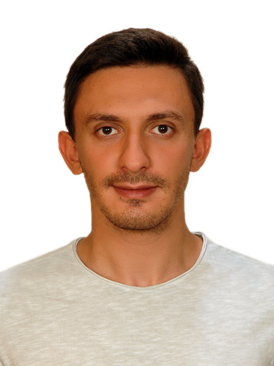

Coupled HMMs for MRSA decolonization
Modeled MRSA colonization as interacting Markov processes across body sites, estimating site-specific clearance and treatment effects. Published in Journal of the Royal Society Interface (2022).
Espoo, Finland

Senior Data Scientist, PhD — probabilistic machine learning, causal inference, and time-series forecasting for longitudinal healthcare data.
I am a senior data scientist and PhD building production forecasting and causal-ML systems for longitudinal healthcare data. I hold a PhD in Computer Science from Aalto University and work at Vaalia Health in Espoo, Finland.
My work combines probabilistic modeling with end-to-end ownership: cohort construction and data pipelines, model training and calibration, causal and counterfactual analysis, and the governance that keeps a model trustworthy once it is deployed. I am most at home with temporal data — modeling dynamics, reasoning under uncertainty, and making predictions that are honest about what they know.
Alongside the applied work I continue to develop methods — Bayesian latent-variable models, state-space methods, and causal inference — and I care about models that stay interpretable, hold up on messy real-world data, and earn their place in whatever they are deployed into.
Vaalia Health
Aalto University & Nokia
Aalto University — Machine Learning for Health Group
Boğaziçi University & BKM — Interbank Card Center
Digital Helix — DeepC
Boğaziçi University & Borusan — R&D
Aalto University
Thesis: Flexible Bayesian latent variable modeling of interacting processes in time-series healthcare.
Boğaziçi University
Thesis: Anomaly Detection in Time Series.
Boğaziçi University
Modeled MRSA colonization as interacting Markov processes across body sites, estimating site-specific clearance and treatment effects. Published in Journal of the Royal Society Interface (2022).
A robust extension that discovers latent response subgroups across patients in multivariate healthcare time series. Presented at ML4H (2023).
Uncertainty-aware multi-output hierarchical Gaussian processes for individual assessment of postprandial glucose and insulin after bariatric surgery. Published in Communications Medicine (2025).
Sparse Kalman filtering that scales nonlinear state estimation to high-dimensional physical systems with partially observed states.
An analog–digital Ising machine model for multi-user MIMO detection, translating memristor hardware constraints into algorithm design for emerging 6G systems.
Spark-based pipelines over large-scale credit-card transaction data, producing interpretable fraud-detection and merchant-risk models adopted in BKM's production analytics.